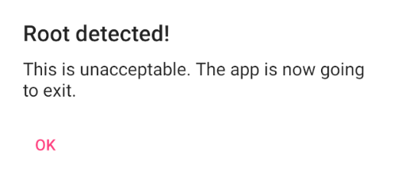
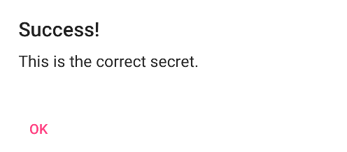

이번 글은 저번 글에 이어서 UnCrackable Level 2 를 풀어보았다.
주의 사항
이 주의 사항은 UnCrackable Level 2 가
자동으로 꺼지는 문제를 위한 주의 사항이다.
나의 경우, Android Studio 를 설치하고 나면 있는 기본적인 AVD 를 사용하였다.
Level 1 은 실행할 수 있었지만 Level 2 는 애플리케이션이 바로 꺼지는 문제가 생겼다.
이런 경우를 만났다면 API 를 30 이하로 낮춰서 하면 애플리케이션이 정상적으로 작동할 것이다.
또한 이유는 모르겠지만 API 30 에서는 바로 AVD 가 루팅되었다.
UnCrackable Level 2
이번 문제도 UnCrackable Level 1 처럼 루팅을 탐지하여
OK 를 누르면 애플리케이션이 종료되고 있다.

JADX 로 .apk 파일을 살펴보겠다.
public void a(String str) {
AlertDialog alertDialogCreate = new AlertDialog.Builder(this).create();
alertDialogCreate.setTitle(str);
alertDialogCreate.setMessage("This is unacceptable. The app is now going to exit.");
alertDialogCreate.setButton(-3, "OK", new DialogInterface.OnClickListener() { // from class: sg.vantagepoint.uncrackable2.MainActivity.1
@Override // android.content.DialogInterface.OnClickListener
public void onClick(DialogInterface dialogInterface, int i) {
System.exit(0);
}
});
alertDialogCreate.setCancelable(false);
alertDialogCreate.show();
}
UnCrackable Level 2 의 MainActivity 에서
루팅이 감지되면 애플리케이션을 종료하는 코드이다.
이 경우 UnCrackable Level 1 과 코드가 똑같아
코드를 그대로 사용할 예정이다.
Java.perform(function () {
console.log("[*] Frida Script start");
let AnonymousClass1 = Java.use("sg.vantagepoint.uncrackable2.MainActivity$1");
AnonymousClass1["onClick"].implementation = function (dialogInterface, i) {
console.log("We passed Sytem.out!!!");
};
console.log("[*] Frida Script finish");
});
이번에는 Secret String 을 찾지 않고도
Success 를 띄우는 방법을 시도해보겠다.
public void verify(View view) {
String str;
String string = ((EditText) findViewById(R.id.edit_text)).getText().toString();
AlertDialog alertDialogCreate = new AlertDialog.Builder(this).create();
if (this.m.a(string)) {
alertDialogCreate.setTitle("Success!");
str = "This is the correct secret.";
} else {
alertDialogCreate.setTitle("Nope...");
str = "That's not it. Try again.";
}
verify 함수를 사용하여 Success! 를 출력하고 있다.
this.m.a 를 살펴보면 Success! 를 출력하는 방법에 대해 알 수 있다.
public class CodeCheck {
private native boolean bar(byte[] bArr);
public boolean a(String str) {
return bar(str.getBytes());
}
}
native 가 있는 것을 보아 JNI 를 사용함을 알 수 있다.
private CodeCheck m;
static {
System.loadLibrary("foo");
}
MainActivity 를 다시 보니 foo 라는 라이브러리를 불러오고 있는 것을 확인했다.
디컴파일한 다음, IDA 로 CodeCheck 를 확인하겠다.
{
const char *v3; // esi
_BOOL4 result; // eax
char s2[24]; // [esp+0h] [ebp-2Ch] BYREF
unsigned int v6; // [esp+18h] [ebp-14h]
v6 = __readgsdword(0x14u);
result = 0;
if ( byte_4008 == 1 )
{
strcpy(s2, "Thanks for all the fish");
v3 = (const char *)(*(int (__cdecl **)(int, int, _DWORD))(*(_DWORD *)a1 + 736))(a1, a3, 0);
if ( (*(int (__cdecl **)(int, int))(*(_DWORD *)a1 + 684))(a1, a3) == 23 && !strncmp(v3, s2, 0x17u) )
return 1;
}
return result;
}
CodeCheck 함수 내부이다.
strcpy 로 s2 에 Thanks for all the fish 를 저장하고 있다.
그 후 v3 와 s2 를 비교한다.
s2 에 있는 문자열을 비교하는 데 사용하기 때문에
Secret String 은 'Thanks for all the fish' 이다.

s2 에 적힌 문자열을 입력하면 Success! 가 뜨는 것을 볼 수 있다.
후기
단순히 JADX 로 분석을 해서 끝날 줄 알았는데
JNI 를 사용하여서 복잡한 문제였다.
전에 배운 JNI 가 실제로 사용된 예시를 보니
어떻게 사용할 수 있는지 알 수 있어 좋았다.